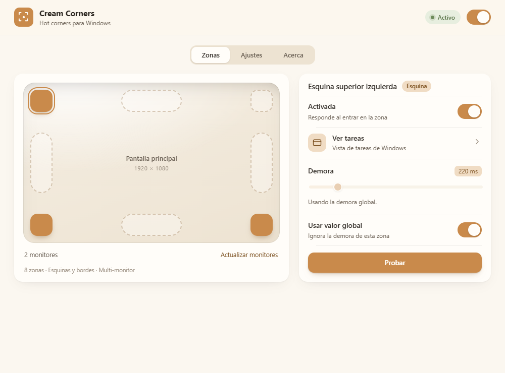
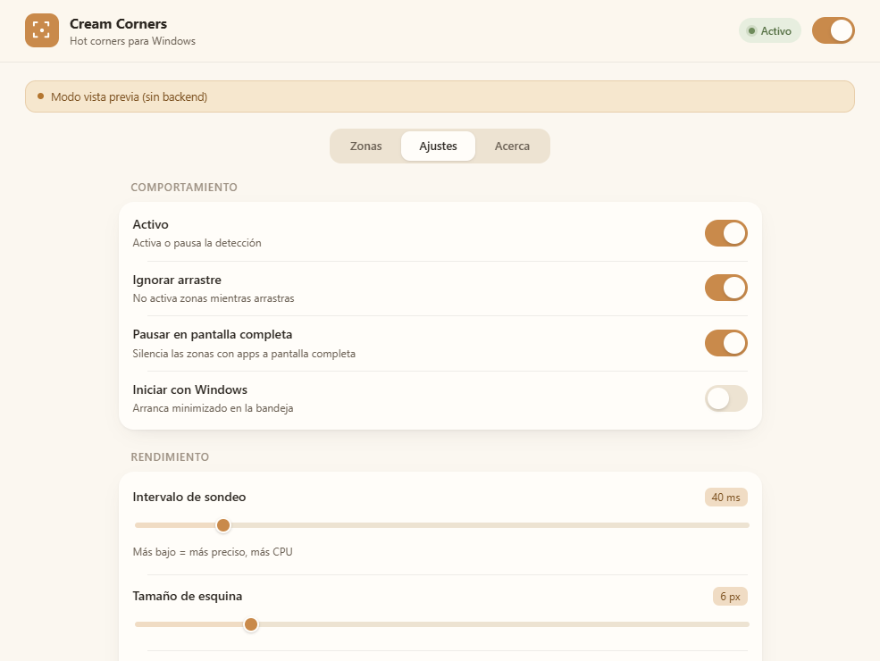
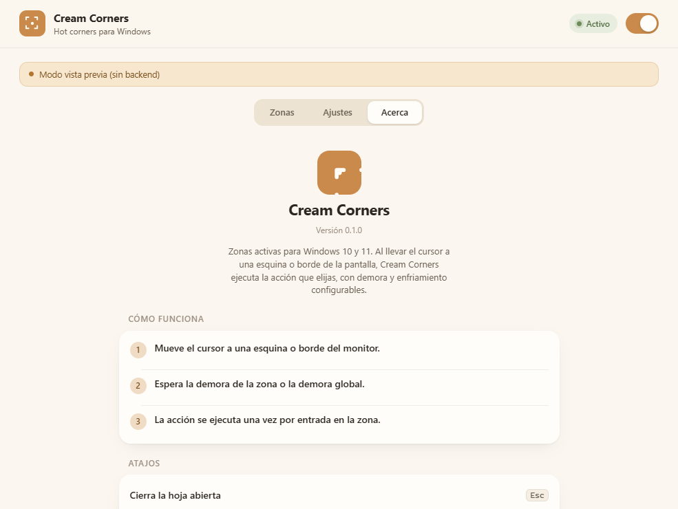

Hot Corners para Windows 10 y 11
Deja el cursor en una esquina o borde de la pantalla y se dispara una acción: Vista de tareas, mostrar el escritorio, bloquear el equipo, un escritorio virtual, un programa o una URL. Cream Corners es una app de bandeja en Rust + Tauri 2 con interfaz crema al estilo iOS y sin telemetría.
Versión 0.1.0 · Windows 10/11 x64 · 1,2 MB · Gratis y código abierto (MIT) · Todas las versiones

Funciones
Ocho zonas, ajustadas a tu forma de trabajar
Cada esquina y cada borde de la pantalla es un disparador propio, con su acción y su dwell. Los valores globales mantienen todo predecible.
-
Cuatro esquinas y cuatro bordes
Ocho zonas activas por pantalla, cada una con interruptor, acción y dwell opcional propio.
-
17 presets listos
Vista de tareas, Mostrar escritorio, Bloquear PC, escritorios virtuales, Administrador de tareas, búsqueda, widgets, enlace rápido y más.
-
Comandos y URLs
Ejecuta un programa con su lista de argumentos, sin shell de por medio, o abre enlaces http, https, ms- y shell:.
-
Dwell y cooldown
Dwell global de 220 ms por defecto, de 0 a 3000 ms, más un cooldown de 800 ms para que una zona no se dispare dos veces.
-
Consciente de arrastre y pantalla completa
Nunca se dispara mientras se mantiene pulsado un botón del ratón y se pausa cuando una app en pantalla completa está en primer plano.
-
Multimonitor y bandeja
Cubre todos los monitores o solo el principal. Vive en la bandeja, mantiene una sola instancia y puede arrancar con Windows.
Capturas
Una interfaz crema y tranquila, al estilo iOS
Toda la app son tres paneles: ajustes globales, el selector de acciones y la página Acerca de.



Instalación
Instalar Cream Corners en Windows
Un instalador, sin cuenta y sin servicio de autoactualización. Descarga la compilación desde la última release de GitHub.
-
Descarga el instalador
Descarga directa: setup.exe (NSIS, recomendado, 1,2 MB) o paquete .msi (1,7 MB). Todos los archivos están también en la última versión.
-
Ejecútalo y acepta el UAC
Ambos instaladores son per-machine, se instalan en
Program Filesy piden elevación. La compilación no está firmada, así que SmartScreen muestra Más información y luego Ejecutar de todas formas. -
Configura tus zonas
La ventana abre en el editor de zonas. Por defecto: arriba a la izquierda Vista de tareas, abajo a la izquierda Mostrar escritorio, abajo a la derecha Bloquear PC. Queda en la bandeja.
Nota sobre SmartScreen. Cream Corners 0.1.0 no tiene certificado de firma de código, así que Windows puede mostrar «Windows protegió tu PC». Elige Más información y Ejecutar de todas formas solo si descargaste el archivo desde la página oficial de releases de GitHub. Se requiere WebView2 Runtime, incluido en Windows 11 y en la mayoría de equipos con Windows 10.
Límites conocidos: no es per-monitor DPI aware, así que configuraciones con escalados mixtos pueden desalinear los bordes de zona; las ventanas elevadas pueden ignorar las teclas sintéticas; no hay autoactualización. La configuración vive en %APPDATA%\CreamCorners\settings.json. Guía completa: guía de instalación.
Comparativa
Cream Corners frente a Windows y HotCornersWin
Windows no tiene hot corners de ratón configurables, así que cualquier configuración de hot corners es un añadido. Así se diferencian las opciones.
| Función | Windows integrado | HotCornersWin | Cream Corners |
|---|---|---|---|
| Hot corners con ratón | No | Sí | Sí |
| Acciones por zona | — | Sí | Sí, esquinas y bordes |
| Dwell / cooldown | — | Sí | Sí, dwell por zona más cooldown |
| Multimonitor | — | Parcial | Sí, todos o principal |
| Código abierto | — | Sí (MIT) | Sí (MIT) |
| Precio | Incluido en Windows | Gratis | Gratis |
HotCornersWin, de flexits, es el proyecto C#/.NET que inspiró esta reescritura en Rust.
FAQ
Preguntas sobre hot corners
¿Windows tiene hot corners integrados?
No. Windows 10/11 tiene Snap Layouts y gestos de esquina en pantallas táctiles, pero no hot corners de ratón configurables; por eso existe esta app.
¿Cream Corners es gratis?
Sí. Tiene licencia MIT, el código está en GitHub y no requiere cuenta ni envía telemetría.
¿Funciona en Windows 11 y Windows 10?
Sí, en ambos, en compilaciones x64.
¿Soporta varios monitores?
Sí. Las zonas pueden cubrir todos los monitores o solo el monitor principal.
¿Interfiere con juegos o apps en pantalla completa?
Se pausa cuando una app en pantalla completa está en primer plano (salvo ventanas del shell), y la supresión de arrastre evita que se dispare mientras se mantiene pulsado un botón del ratón.
¿Cómo lo desinstalo?
Abre Configuración > Aplicaciones (o Panel de control) y desinstala Cream Corners. Opcionalmente borra %APPDATA%\CreamCorners para eliminar el archivo de configuración.